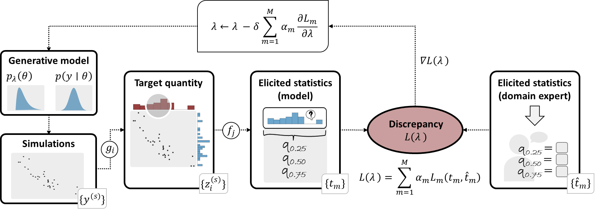

Note
This project is currently under development.
If you are interested in the underlying conceptual framework, we encourage you to explore the following papers:
Bockting, F., Radev S. T., & Bürkner P. C. (2024) Expert-elicitation method for non-parametric joint priors using normalizing flows. Preprint at https://arxiv.org/abs/2411.15826
Bockting, F., Radev, S. T. & Bürkner, P. C. (2024). Simulation-based prior knowledge elicitation for parametric Bayesian models. Scientific Reports 14, 17330 (2024). https://doi.org/10.1038/s41598-024-68090-7
The prior_elicitation package#
The prior_elicitation package provides a simulation-based framework for learning either parametric or non-parametric, as well as independent or join prior distributions for parameters in a Bayesian model based on expert knowledge.
What is it about?#
The Bayesian paradigm offers the possibility to incorporate prior knowledge into a statistical model through the specification of prior distributions (short: priors):
whereby we consider here a prior distribution \(p(\theta \mid \lambda)\) parameterized by \(\lambda\). The ultimate question that arise here is How should the prior distribution be specified?
In this project, we focus on specifying priors through expert knowledge. A whole field of research, commonly referred to as (expert) prior elicitation, has emerged around the question of how to gather expert knowledge and translate it into appropriate prior distributions. Garthwaite et al. (2005) [2] identified four key stages in a prior elicitation process:
1. Setup stage: In this stage, the problem is defined, an expert is selected, and the quantities to be elicited from the expert (referred to as target quantities) are determined;
2. Elicitation stage: Here, the target quantities are queried from the expert using specific elicitation techniques, resulting in what we call elicited statistics;
3. Fitting stage: This involves fitting a (potentially joint) probability distribution based on the expert-elicited statistics;
4. Evaluation stage: Finally, the adequacy of the fitted probability distribution is assessed in collaboration with the expert
In this context, elicitation methods aim to provide a systematic and formal procedure for deriving prior distributions based on expert-elicited statistic. The prior_elicitation package provides a modular framework that supports the development of a wide range of prior elicitation methods.
How does it work?#
Conceptual idea#
The general workflow of our framework can be summarized as follows:
{kind=link}
1. Define the generative model: Define the generative model including dimensionality and parameterization of prior distribution(s). (Setup stage)
2. Identify variables and elicitation techniques for querying expert knowledge: Select the set of variables to be elicited from the domain expert (target quantities) and determine which elicitation techniques to use for querying the selected variables from the expert (elicited statistics). (Setup stage)
3. Elicit statistics from expert and simulate corresponding predictions from the gener- ative model: Sample from the generative model and perform all necessary computa- tional steps to generate model predictions (model-elicited statistics) corresponding to the set of expert-elicited statistics. (Elicitation stage)
4. Evaluate consistency between expert knowledge and model predictions: Evaluate the discrepancy between the model- and expert-elicited statistics via a multi-objective loss function. (Fitting stage)
5. Adjust prior to align model predictions more closely with expert knowledge: Use mini-batch stochastic gradient descent to adjust the prior so as to reduce the loss. (Fitting stage)
6. Find prior that minimizes the discrepancy between expert knowledge and model predictions: Repeat steps 2 to 5 iteratively until a prior is found that minimizes the discrepancy between the model and expert-elicited statistics. (Fitting stage)
7. Evaluate the learned prior distributions: Run the learning algorithm (steps 2 to 6) multiple times to obtain a set of prior distributions that can equally well represent the expert data. Select a plausible prior distribution in consultation with the domain expert or apply model averaging techniques. (Evaluation stage)
Please consult our papers for the methodological details (see Bockting et al. 2024a, 2024b; References are provided below).